1. 예쁜 패키징을 발견하기 위해 항상 눈을 크게 뜬다
2. 내용물은 먹어서 없앤다
3. 휴지, 물티슈, 알콜솜 등으로 닦아서 깨끗하게 보존한다
나는 초콜릿, 사탕 껍질 같은 예쁜 포장지를 모으는 취미가 있다.
포장지 사냥하는 방법은 다음과 같다.
↓↓↓돋보기를 드래그↓↓↓
1. 예쁜 패키징을 발견하기 위해 항상 눈을 크게 뜬다
2. 내용물은 먹어서 없앤다
3. 휴지, 물티슈, 알콜솜 등으로 닦아서 깨끗하게 보존한다
차곡차곡 하나씩 정리한 포장지를 보면 그 사탕에 얽힌 추억이 떠오른다.
다람쥐와 아기가 그려진 초콜릿 포장지는 미술학원 선생님이 여행을 다녀오셨는데,
기념품이라며 건네주셨다.
그 선생님을 굉장히 따르고 좋아했는데, 포장지를 보고 있으면 초콜릿의 맛과
상냥했던 선생님의 목소리가 떠올라서 기분이 좋아진다.
 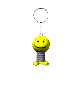
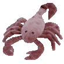
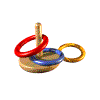
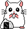
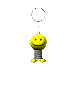
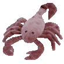
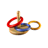
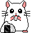
어렸을 땐 한 달에 한 번 매직을 꼬박꼬박 할 정도로 생머리에 집착했었다.
아파트 상가 1층 미용실에서 매직을 열심히 받은 기억이 난다.
미용실 한구석에는 기다리는 사람들을 위한 소파와 잡지, 매니큐어, 그리고 사탕 바구니가 놓여있었다.
그 포장지가 너무 갖고 싶어서 무늬가 겹치지 않게 한 움큼 골라 쥐었던 기억이 난다.
그 여름날 문을 활짝 열어놨던 미용실에 불어온 선선한 저녁 바람이 느껴지는 기분이다.
 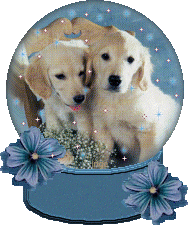
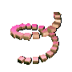
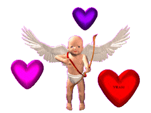
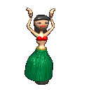
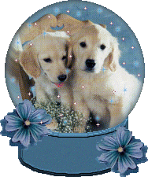
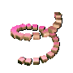
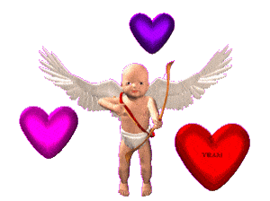
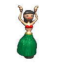
나는 커피를 싫어해서 전혀 마시지 않지만,
때로는 밤샘을 위한 카페인이 필요하다. 이럴 땐 밀크티를 마신다.
밀크티를 좋아하는 나를 위해 중국에서 유학한 친구가 연꽃 밀크티를 선물해 줬다.
원래는 연꽃차를 우려낸 뒤 우유와 설탕을 섞는 음료지만,
친구가 선물해 준 연꽃 밀크티는 가루 형태로 우유만 있으면 타 먹을 수 있어서 간편했다.
맛은 굉장히 독특했다. 꽃내음, 풀내음이 강하게 나는데
우유와 만나서 부드럽기도 하고. 달콤한 맛이 왠지 꽃잎을 씹은 느낌이기도 하고.

어떤 일본 아이돌을 좋아한 적 있다. 너무 사랑해서 일본에 공연을 몇 번이나 보러 갔다.
아이돌을 좋아해 본 사람은 알겠지만, 콘서트 현장에서는 간식이나 굿즈를 서로 교환하는 문화가 있다.
준비된 오타쿠인 나는 당연히 내가 그린 스티커와
일본인들이 좋아하는 한국 간식을 검색해서 준비해 갔다.
거기서 사귄 일본인 친구들과 간식을 교환했다. 특이하게 간식과 함께 명함을 교환하는 분들이 많았다.
일본 팬들만의 문화인가 보다. 그때 어떤 분께서 후리카케를 주셨다.
일본은 새로 만든 뉴트로 디자인이 아니라,
옛날 패키징을 오랫동안 바꾸지 않는 진짜 레트로 디자인이 많아서 신기하다.
 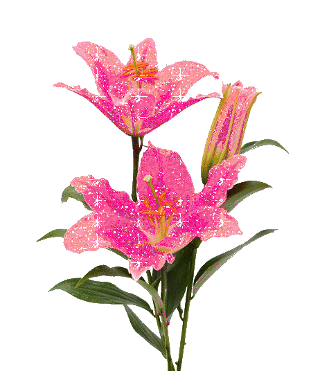
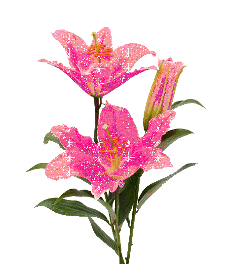
아직도 쓰레기나 모으고 있냐는 소릴 들어도
알록달록 손바닥만 한 작은 세계에 집착하게 된다.
나에게는 사진 앨범만큼이나, 친구들의 편지만큼이나
추억을 되새겨주는 소중한 물건이다.
아마 이 버릇은 영원히 고치지 못할 것 같다.